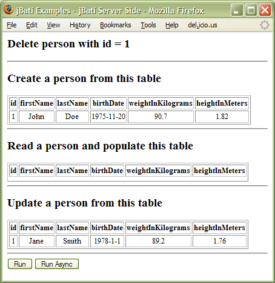

Version 0.2
2008-05-05
Marty Kube
jBati is a Object Relational Mapping (ORM) framework for JavaScript programs running on the Jaxer platform. JavaScript has primarily been a browser scripting language. Lately, JavaScript has been gaining traction as a server side development language. Once JavaScript moves to the server side, interaction with a database becomes an important component of most applications. Developers working on the server side use ORM frameworks to significantly improve development speed and quality as compared to the alternative of ad hoc persistence frameworks or SQL embedded within application code. jBati aims to fulfill the need for a JavaScript ORM solution on the Jaxer platform.
jBati is targeted to the Jaxer platform. Jaxer is an AJAX web application development platform that uses JavaScript on the server side. Jaxer allows development of an entire application in JavaScript and supports database interaction in JavaScript.
There is a spectrum of approaches in ORM frameworks. In the Java world, two contrasting examples are Hibernate and iBATIS. Both of these are reasonable approaches; either one might be suitable depending on your needs (here are some recommendations on choosing an ORM framework).
Hibernate falls into the traditional ORM framework camp, which are frameworks that pretty much handle all of the object life cycle details for you. You define object attributes and relationships and the framework generates SQL and often DDL, decides when object state has changed and a database update is needed, and generally does the right thing. The database side of the persistence model is very much encapsulated.
iBATIS falls into the SQL mapper category. For this category of frameworks, you define SQL statements and a mapping to objects and object attributes, and the framework executes the SQL and populates objects. In this case, the framework user generally handles more details of the object life cycle.
Both approaches have merit and choosing the right one depends on the situation. SQL mappers generally work better when the application developer has less control over the database model or when the object instances have a complex relationship to database tables.
jBati is a SQL mapper framework. If a SQL mapper is the right choice for you, read on...
jBati is modeled on iBATIS, which is a widely used Java ORM framework. The intent for jBati is that the configuration and API be a direct match to iBATIS. The differences are driven by what makes sense for the implementation language, which is Java for iBATIS and JavaScript for jBati. Also, jBati is a newer project and will generally have less features (at least for now).
The remainder of this document covers the two main task that must be accomplished to use a SQL mapper ORM framework: the configuration to specify SQL and it's relationship to domain objects, and the API that is used to access domain objects in application code.
This guide will make the most sense if you are familiar with Jaxer and iBATIS.
Setting up the framework requires that the jBati library be loaded at the appropriate points the Jaxer page life cycle. Check out the Jaxer documentation on callbacks and using JavaScript libraries during callbacks.
Likewise, it might be worthwhile to take a look at the iBATIS tutorial, or if you have a little more time, the iBATIS Developer Guide. These documents show how to use a SQL mapping framework and the philosophy that jBati was built on.
Obtain the latest distribution from the project home page (http://code/google.com/p/jbati). The library is comprised of two JavaScript files, namely jbati-client.js and jbati-server.js. The client file is intended to be executed in the browser, while the server file is intended to be executed on a Jaxer server.
A few more items to note before we move on to an example. The jBati API is available at http://beavercreekconsulting.com/jbati/apidocs and in the distribution files. Also, jBati is a young and fast moving project; check the Release Notes for the availability of specific features.
To make good use of jBati, you'll need a database, SQL, and some JavaScript objects that you want to put together in a useful manner. You'll have to write the configuration files which contain the SQL and the mapping to JavaScript objects/attributes. Then, you'll include the jBati library in you application code and use the API to fetch and persist JavaScript objects in your database. To make this clear, we'll start with an example and then follow up with reference information.
The example discussed here is available in the distribution under examples/jcs. This example is a HTML page that executes a cycle of CRUD operations on a Person object. The attributes of the Person are first read from a HTML table and the Person object is inserted into the database. Then the same person is read back to populate another HTML table. Person attributes to update the in the database are read from another table, and finally the Person is deleted from the database. The CRUD cycle can be executed in a sequential fashion, or, with asynchronous calls to the server. Here is a screen shot of jbati-client-side.html in action:

The top portion of jbati-client-side.html shows the pieces that are need:
001 <html> 002 <head> 003 <title>jBati Examples - jBati Client Side</title> 004 005 <!-- 006 -- An example of jBati client side usage 007 --> 008 009 <!-- load jBati server side framework --> 010 <script src="../../lib/jbati-server.js" runat="server" autoload="true"></script> 011 012 <!-- load jBati client side framework --> 013 <script src="../../lib/jbati-client.js"></script> 014 015 <!-- Domain objects, expose on client and server --> 016 <script src="user-objects.js" runat="both" autoload="true"></script> 017 018 <!-- Domain objects ORM mapping, needed only on server --> 019 <script src="user-object-maps.js" runat="server" autoload="true"></script>
On line 10, the server side of the jBati framework is imported into the server execution context. The Jaxer attributes are important here; both runat="server" and autoload="true" are necessary. Likewise, the client side of the jBati framework, which runs in the browser, is loaded on line 13.
You'll need to supply equivalent scripts for the next two included script. The first script script defines domain objects and the second script tells jBati to load your configuration files which contains SQL and the mapping to objects.
The domain objects need to be available on the client, where you'll use them, and on the server side, where jBati will take care of persistence operations. On line 16, the domain objects are imported into both the client and server context with the script attributes of runat="both" and autoload="true". Here's a listing of user-objects.js:
001 //
002 // User domain objects
003 //
004 (function () {
005
006 if(typeof Examples == 'undefined') {
007 Examples = {};
008 }
009
010 Examples.Domain = {};
011 Examples.Domain.Person = function () {};
012
013
014 })();Person is a pretty lightweight domain object. In fact, if you find yourself declaring this type of object, you can just use the JavaScript Object class in your object mapping. In any case, here, the domain objects are kept in a namespace object (Examples). Executing this code is need during server callbacks to populate the global variable Examples and thus the script attribute autoload="true" is required for this example. On the other hand, if you're not using a namespace, the autoload attribute is not needed.
The next bit of scripting you need to provide tells jBati to load your SQL and object mapping files. On line 19 user-object-maps.js is loaded. Here's a listing:
001 //
002 // Load the SqlMapConfig file
003 //
004 (function () {
005
006 var path = Jaxer.Dir.resolvePath('../jcs/sqlMapConfig.xml');
007 var url = Jaxer.Dir.pathToUrl(path);
008 JBati.Server.SqlMapClientBuilder.buildSqlMapClient(url, 'ExamplesJSS');
009
010 })();Loading the object mapping configuration is a server side only operation as you likely don't want to expose this information on the Internet. Therefore, the including script tag is run="server". The path to the file on line 6 is a file system path, relative in this case, which gets resolved to a file protocol URL on line 7. Line 8 invokes the jBati call to parse the configuration file and build a jBati client.
In this example, the jBati client is used on the browser side. The second parameter to buildSqlMapClient(), 'ExampleJSS', names the client for later retrieval by JavaScript executing in the browser. Naming the client is optional and needed only if you're using multiple database connections. The unnamed, or default, client uses the Jaxer application database connection.
The next item needed is the jBati configuration files. The first file contains a sqlMapConfig document:
001 <?xml version="1.0" encoding="UTF-8" ?> 002 <!DOCTYPE sqlMapConfig 003 PUBLIC "-//ibatis.apache.org//DTD SQL Map Config 2.0//EN" 004 "http://ibatis.apache.org/dtd/sql-map-config-2.dtd"> 005 006 <sqlMapConfig> 007 <sqlMap resource="person.xml"/> 008 </sqlMapConfig>
This file is pretty light weight in the current version. The only interesting part is loading a sqlMap XML file named person.xml. The resource attribute is a path relative to the sqlMapConfig file. In future releases, this file will contain configuration specific to a database connection (such as database type, SqlLite or MySql, and connection credentials). A real application would include several sqlMap files, with files split per domain object for easier maintenance.
Finally, person.xml holds the SQL and object mapping:
001 <?xml version="1.0" encoding="UTF-8" ?> 002 <!DOCTYPE sqlMap 003 PUBLIC "-//ibatis.apache.org//DTD SQL Map 2.0//EN" 004 "http://ibatis.apache.org/dtd/sql-map-2.dtd"> 005 006 <sqlMap> 007 008 <!-- Use scalar type as parameter and allow results to 009 be auto-mapped results to Person object --> 010 <select id="getPerson" resultClass="Examples.Domain.Person"> 011 SELECT 012 PER_ID as id, 013 PER_FIRST_NAME as firstName, 014 PER_LAST_NAME as lastName, 015 PER_BIRTH_DATE as birthDate, 016 PER_WEIGHT_KG as weightInKilograms, 017 PER_HEIGHT_M as heightInMeters 018 FROM person 019 WHERE PER_ID = #value# 020 </select> 021 022 <!-- Use Person object properties as parameters for insert. Each of the 023 parameters in the #hash# symbols is a Person property. --> 024 <insert id="insertPerson"> 025 INSERT INTO person ( 026 PER_ID, PER_FIRST_NAME, PER_LAST_NAME, 027 PER_BIRTH_DATE, PER_WEIGHT_KG, PER_HEIGHT_M 028 ) VALUES ( 029 #id#, #firstName#, #lastName#, 030 #birthDate#, #weightInKilograms#, #heightInMeters# 031 ) 032 </insert> 033 034 <!-- Use Person object properties as parameters for update. Each of the 035 parameters in the #hash# symbols is a Person property. --> 036 <update id="updatePerson"> 037 UPDATE person 038 SET PER_FIRST_NAME = #firstName#, 039 PER_LAST_NAME = #lastName#, 040 PER_BIRTH_DATE = #birthDate#, 041 PER_WEIGHT_KG = #weightInKilograms#, 042 PER_HEIGHT_M = #heightInMeters# 043 WHERE PER_ID = #id# 044 </update> 045 046 <!-- Use Person object "id" properties as parameters for delete. Each of the 047 parameters in the #hash# symbols is a Object property. --> 048 <delete id="deletePerson"> 049 DELETE FROM person 050 WHERE PER_ID = #id# 051 </delete> 052 053 </sqlMap>
This file is a pretty direct copy from the iBATIS tutorials. This is noted here, not just to give the due credit, but to also point out a fundamental design decision. The jBati configuration documents conform to the iBATIS DTD. There are many elements that are not in fact supported by jBati. However, the aim is to allow validation of the XML and support similar semantics.
All of the elements are in place, so let's look at some code to see how the sqlMap is used. The select statement on lines 8-20 is executed with the following code. First, a jBati client is fetched:
var client = new Jbati.Client.SqlMapClient('ExamplesJSS');Then, a single Person object is fetched:
var p = client.queryForObject('getPerson', 1);The parameter 'getPerson' is the id attribute of the XML select element and is used to identify which SQL statement is to be executed. The SQL has replacement tokens such as the #id# parameter on line 19 of the sqlMap document. The replacement token is typical substituted with similarly named property of the passed in parameter object. In this case, since the parameter is a single valued, or scalar, parameter, jBati uses it irregardless of the name of the replacement token.
The select statement is executed and jBati then creates a new instance of Person and populates properties of the person object with the result set. The SQL statement has column aliases for the columns. This allows mapping of table columns to object properties.
Executing the insert statement shows how to use a object as the parameter object. For example, if we have a Person object:
var p = new Examples.domain.Person(); p.id: 1001, p.firstName = 'Bob', p.lastName ='Jones', p.birthDate = new Date(1975, 2, 13), p.weightInKilograms = 82.45, p.heightInMeters = 1.88
This object can be used to fill in the values for the updatePerson SQL statement:
client.update('updatePerson', p);This wraps up the first example.
It is worth noting that jBati supports one other main usage pattern, which is jBati on the server side. In this pattern, you would write server side code that interacts with jBati, and then also write a server side data access API with methods marked for Jaxer to proxy. For an example of this pattern, see examples/jss.
The next sections document the sqlMapConfig and sqlMap XML documents.
The sqlMapConfig element is loaded with the call:
Jbati.Server.SqlMapClientBuilder.buildSqlMapClient(url).
The url argument must be a file protocol URL.
The sqlMapConfig XML document should conform to the iBATIS sqlMapConfig DTD (http://ibatis.apache.org/dtd/sql-map-config-2.dtd). Many elements in the DTD are not supported and will be ignored. The supported elements are listed in the following table:
|
Element |
Attribute |
Description |
|
sqlMapConfig |
|
|
|
SqlMap |
resource |
File system path to a sqlMap file. Relative paths are relative to the location of the sqlMapConfig file. |
Similar to the sqlMapConfig document, the sqlMap XML document should conform to the iBATIS sqlMap DTD (http://ibatis.apache.org/dtd/sql-map-2.dtd).
Many elements in the DTD are not supported and will be ignored. The supported elements and attributes are listed in the following table:
|
Element |
Attribute |
Description |
|
sqlMap |
|
|
|
select |
|
Contains a SQL select statement as CDATA. |
|
select |
id |
The is by which SQL statements are referred to. All API calls that execute DML require this as a parameter. |
|
select |
resultClass |
The class from which an object instances will be created and populated with the result set values. |
|
update |
|
Contains a SQL update statement as CDATA. |
|
update |
id |
The is by which SQL statements are referred to. All API calls that execute DML require this as a parameter. |
|
insert |
|
Contains a SQL insert statement as CDATA. |
|
insert |
id |
The is by which SQL statements are referred to. All API calls that execute DML require this as a parameter. |
|
delete |
|
Contains a SQL delete statement as CDATA. |
|
delete |
id |
The is by which SQL statements are referred to. All API calls that execute DML require this as a parameter. |